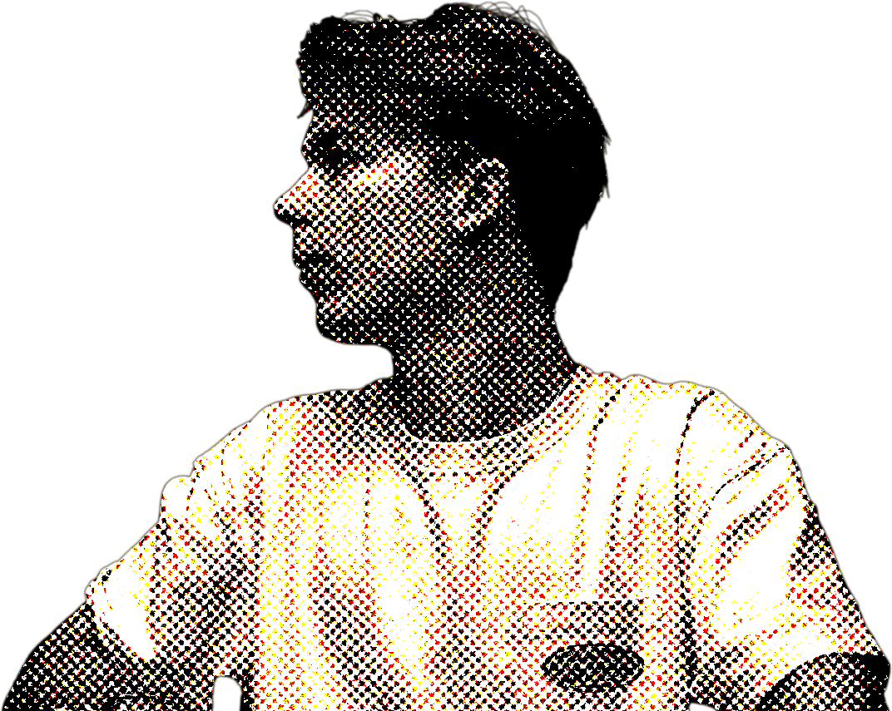

domen markeljc
come closer.
identity, web, motion — for the second look, not the first glance
each project starts as a question — how small can a mark be, how quiet can an interface stay — and ends as an answer worth keeping.
about

i work across brand identity, packaging, and digital product design — usually all three on the same project, because the mark on a label and the button on a screen are solving the same problem: be understood in half a second.
most of what i do starts with a restriction — a shelf, a thumb, a viewport — and ends with the smallest version of the idea that still says everything. i'm not interested in decoration for its own sake.
- based
- slovenia — working further out
- works in
- —
- status
- open for new projects
start a
project
have something that needs a mark, a label, or a screen — done properly? let's talk it through.
start a projectopen for new projects · replies within 2 days